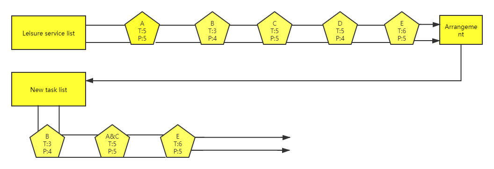
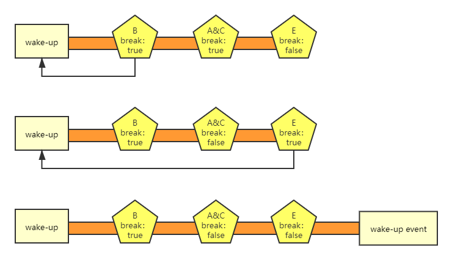

Leisure Service（idle service）
Generally speaking, if no one interacts with the robot for a long time, the robot will enter the leisure state. If you want the robot to perform some specific tasks in "leisure" time, such as greeting, cruising or playing advertisements, the leisure service can help you implement and manage the relationship between these tasks.
Leisure（Idle） state：We define the situation that the robot has no skill running state and there is no object within 1.3 meters ahead as "leisure state" .
Leisure （Idle） task：We define the situation that the robot starts task such as greeting，cruising or playing advertisements in leisure state as "leisure task" .
Management Rules
-
Set tasks with short leisure time will execute first.
-
The high priority task is executed first, while the leisure time is the same .
-
Tasks with the same leisure time and priority will be executed at the same time.

As shown in the figure above, A, B, C, D and E represent all leisure tasks registered by the robot. T represents the time of each task entering, P represents the priority level. Leisure task management arranges these tasks into a new task list.
Leisure Task|Break leisure rule
-
Break leisure tasks: If the current task is ‘break leisure task’ , it will wake up the robot, reschedule, and will not enter the next task .
-
Non breaking leisure tasks :If the current task is ‘non breaking leisure task’, T、the task list will be executed in turn until the wake-up event interrupts the leisure state.

As shown in the figure above, after the break leisure task is executed, the leisure state recalculates the time, and the subsequent tasks can not be executed, as shown in the red part of the figure above .
Leisure Task|Creating
-
Configure leisure tasks and create XML folders in the app directory .
-
Create the robot_leisure.xml file under the XML folder. The contents of the file are as follows, the
key,actionandskillnamecan not be empty, they are case sensitive. The leisure service will automatically scan all configured applications and manage them uniformly.xml <?xml version="1.0" encoding="utf-8"?> <manifest> <leisures> <task action="com/leisure/test1" key="task1" open="true" priority="5" skillName="test1" time="5" wakeup="false" > </task> </leisures> </manifest>
API Interface of Leisure Service
Class LeisureManager
- java.lang.Object
- com.ubtechinc.cruzr.sys.cruzrleisure.leisure.LeisureManager
| Methods | Description |
|---|---|
| enableLeisure(String key, boolean enable) | key:Key value of leisure task enable: true：open，false：close Open or closed leisure tasks |
| getLeisure(String key) | key:key value of leisure task Get the Key's leisure tasks |
| getLeisures() | Get all currently registered leisure tasks |
| init(Context context) | Initialize the leisure service API. Be sure to initialize it before using the API |
| init(Context context, IinitListener listener) | context:context listener:Callback initialization status Initialize the leisure service API. Be sure to initialize it before using the API |
| isConnected() | Determine whether the current service is connected. |
| prohibitedLeisure() | It is forbidden for the robot to enter the leisure time. After calling the prohibitedleisme() method, the robot will not calculate the leisure time until it calls unProhibitedLeisure method to unlock. |
| unProhibitedLeisure() | Unprohibit leisure state of robot ，the robot recalculates the leisure time after being unprohibted. |
| update(LeisureOptions option) | option:Please see table2 for parameters Update the leisure task attribute. For details, please refer to the description above. |
| wakeup() | Interrupt the leisure time, and recalculate the leisure time after calling. |
- java.lang.Object
- com.ubtechinc.cruzr.sys.cruzrleisure.entity.LeisureOptions
| Type | Parameter | Parameter Description | Must Fill |
|---|---|---|---|
| boolean | isOpen | true: current leisure task enabled false: current leisure task disabled. |
no |
| boolean | isWakeup | When the current leisure task is started, it will be in the wake-up state. The robot will recalculate the leisure time and will not enter the next leisure task . false: The current task will not break leisure state, the next leisure task can continue to execute. |
yes |
| String | key | Unique identification of leisure tasks. An app can create multiple leisure tasks. | no |
| int | priority | The priority of leisure tasks. If the leisure time is the same, only the leisure tasks with higher priority will be started. If the time and priority are the same, they will be started at the same time. | yes |
| long | time | Length of time to enter leisure task, unit:s. | no |
Interface Instruction
Initialize with onCreate method of Appcation when using interface .
LeisureManager.get().init(this, new IinitListener() { @Override public void onInit() { Log.i("leisure", "successfully initialize"); } }); }
The core interface of leisure service is update(LeisureOptions options)，It can update the properties of leisure tasks through this interface ，Such as starting or stopping tasks, changing the time and priority of entering tasks, etc . For example, set the entry time of "task1" leisure task to 20s, and close the task . As follows:
LeisureOptions options1 = new LeisureOptions.Builder().key("task1").time(20).open(false).build(); LeisureManager.get().update(options1).done(new DoneCallback<Void>() { @Override public void onDone(Void aVoid) { Log.i("leisure", "update success"); } }).fail(new FailCallback<Exception>() { @Override public void onFail(Exception e) { Log.e("leisure", "update failed-> " + e.getMessage()); } });